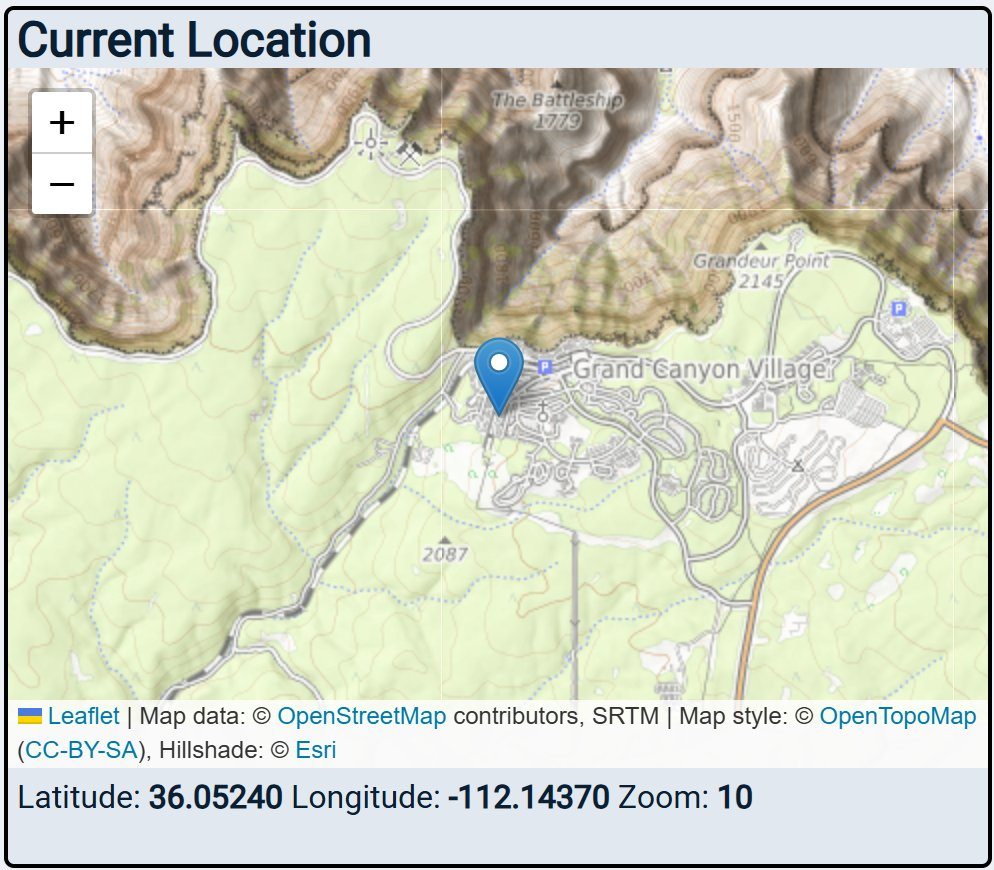

Field Notes · Part 3
However They Read It Out

RangerTrak is a free, open-source radio log and map for the scribe at a CERT, ACS/ARES, SAR or wildland-fire command post. Log who, where, when and what off the radio; it maps them. It works offline once set up, and prints the Form 309 Communications Log and the ICS-213. I built it, as the first tool from SteadyEOC, my one-person effort building software for teams that have to keep working when the network doesn’t. It’s AGPL and will stay free. Try it at rangertrak.org, no account or install needed.
RangerTrak is in alpha. It’s ready to try in a drill or at your desk, not yet for a real call-out, and 1.0 is planned for November.
“Command Post, Team 2, position is one-zero-tango-foxtrot-sierra, one-two-three-four-five, six-seven-eight-nine-zero.” That's MGRS, read the way it's actually said over a radio: in digit groups, not one long string. Ten minutes later a different team calls back a plain latitude and longitude, because that's what their phone shows them. An hour after that, someone reads a position straight off a paper topo quad the old-fashioned way, in degrees, minutes and seconds.
No two teams read a position the same way, and a command post that can only accept one format is quietly telling every other team to translate first and hope they get it right. RangerTrak's answer is to accept whatever comes over the air and translate it itself, on the device, with nothing to look up and nothing that needs a signal.
Whatever format the radio gives you

On the entry screen, a small switcher sits above the coordinate boxes. Pick the format the call actually used, type it in, and the position is set. Everything else it can be expressed as sits right underneath, already converted and read-only, so you can read a different format back if that's more useful to whoever's asking. RangerTrak handles:
- Decimal Degrees, Degrees + Decimal Minutes, and Degrees-Minutes-Seconds — the three usual ways to say a latitude and longitude.
- MGRS, the grid printed on every USGS topo quad and the one US search and rescue, wildland fire and the National Guard read aloud most often, entered as the grid reference, easting and northing the way it's actually called out. The US National Grid (USNG), the civilian standard for search and rescue, reads with the same numbers.
- UTM, entered the same way, as its own zone, hemisphere, easting and northing.
- Maidenhead grid locators, the four-to-six character squares ham radio operators use, typed into the same box as an address or a Plus Code — RangerTrak recognizes the shape and converts it.
- Plus Codes, and a plain street address, in that same box.
Whichever format you used last on a given device greets you next time, on any mission — a team that mostly works in MGRS doesn't have to reselect it every session. Every other format still stays one tap away, because an unexpected call in a format your mission wasn't set up for should never be a problem. Address lookup needs an actual internet connection; every coordinate format works with the network completely gone.
The grid is on the map too. On the Map page, the layers box (top right) can lay a USNG / MGRS grid over the map, drawn on the device so it works offline. When a team reads a grid reference, you can find the square by eye before you’ve finished typing.
Why a calculated code beats a looked-up one
Plus Codes and What3Words solve the same problem — turning an exact spot into something short enough to read over the air — but in opposite ways. A Plus Code comes out of an open standard: your device derives it from the coordinates itself, instantly, with nothing to look up. A three-word address is friendlier to say out loud, but it only exists because a company's own servers hand it out and translate it back on request — ask with no connection, and there's nowhere to ask. In a command post that has already lost its network — the exact situation this app is built around — that stops being academic. RangerTrak calculates the Plus Code for every position you enter, for free, on the device, for exactly this reason.
One old-map caution
Every format above assumes a modern GPS position — WGS84, what a phone or handheld GPS receiver gives you by default. A position read straight off an older paper topo map may be surveyed against an older reference instead, NAD27, and the same-looking numbers can land around 100 meters off from where you'd expect in much of the western US. If a position looks slightly wrong next to what you can see on the map, suspect the datum before you suspect the caller.
The mini-map's real job: the pin-in-the-water check


Next to the entry form is a small map showing exactly where whatever you just typed landed. Its job is to catch the mistake before it costs anyone time: if the pin is sitting in the middle of a lake, or on the wrong side of a ridge, read the coordinates back over the radio while the caller is still on frequency. A transposed digit is a five-second fix now and a real problem twenty minutes later. That little map is also a shortcut in its own right — click anywhere on it and the coordinates fill themselves in, no typing at all.
Two maps, both offline, and a route worth following

There are two maps behind the Map button, and both work offline, in different ways. The Leaflet map is the default: topographic, with contour lines, and the best detail anywhere in the world when you’re online. To use it offline, you save your area ahead of time. Flip the switch under it to the MapLibre map, which draws from PMTiles map files kept on the device and never needs a connection. A low-detail world map is built in, a demo mission brings street detail for its own area while it’s loaded, and you can load a map file with full street detail for yours.
Both maps draw every report as a color-coded marker, grouped into a numbered cluster where they overlap. The Leaflet map also draws a route trail joining one person's reports oldest to newest, so you can see which way a team has actually moved instead of reading a scatter of dots and guessing.
Getting your own area onto the device

Each map has its own way. On the Leaflet map, Save this area for offline use stores the area on screen at the zoom you’re on plus two closer levels. It saves the topographic map only: OpenStreetMap’s servers don’t allow bulk saving, and the satellite view is online only.
On the MapLibre map, Load a custom .pmtiles file… keeps a map file for your own area on the device, with full street detail. Before it loads anything, it checks that the file really is a map file and shows its size, zoom range and coverage. Making the file takes a free command-line tool, one command and about ten minutes; the walkthrough is in the app’s Help, under Your data → Make a map file for your area.
Try it in ten minutes
- Load a demo mission if this device doesn't already have one: Mission → Danger zone → pick a demo scenario → Load sample mission. It replaces what’s on the device, so use a spare browser if you have a real mission there.
- On the entry screen, use the coordinate switcher to enter a position in a format you don't normally use, and read the other formats it fills in underneath.
- Look at the small map beside the form. Click somewhere on it and watch the coordinates change — that's the pin-in-the-water check working in reverse.
- Open Map and find one ranger's route trail. Open the layers box and turn on the USNG / MGRS grid. Then flip the switch to the MapLibre map and see the same reports drawn from the demo's own PMTiles map file.
Rather be led through it? Module 3 of the RangerTrak Tour Guide, Where exactly?, walks you through it hands-on. New to RangerTrak? Start the tour.
Tell me
- What grid does your team actually read over the air that isn't here yet? PLSS Township/Range/Section is the one I hear about most; a national grid from outside the US is another.
- If you're outside the US: what formats and grids does your team actually use, and what would you expect a tool like this to support?
- Did the pin ever land somewhere obviously wrong? Tell me what format you typed and what you expected instead — that's the fastest way to find a real bug.
Use the feedback form (start with “Blog 3”), Help → feedback inside the app, or email RangerTrak [at] steadyeoc [dot] com.
The series
- The Paper Log, Without the Paper
- Hot, Warm, Cold
- However They Read It Out (this post)
- From Radio Log to Form 309 and ICS-213
- More Than One Laptop
- What’s Missing, and Who Decides
- Your Roster Is Already in a Spreadsheet
- Shift Change: Op Periods, Scribes and Laptops
- After the Mission: Summaries, AAR and the Final Report
- Field Phones, Up Close
- RangerView
- People, Teams and Places: help me get this right
Next: From Radio Log to Form 309 and ICS-213. The same reports, printed on FEMA’s own ICS-213 and a real Form 309 Communications Log, with nothing retyped.